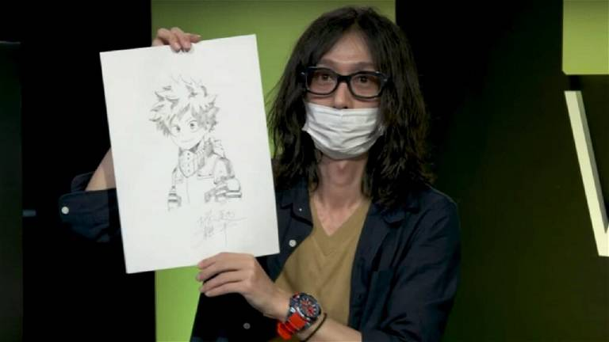

Boku no Hero Academia
La serie sigue las aventuras de Izuku Midoriya, un joven sin poderes en un mundo donde casi todos tienen habilidades sobrenaturales, y su sueño de convertirse en un héroe.
Precio: €9.99
Boku no Hero Academia es un manga japonés escrito e ilustrado por Kohei Horikoshi. Se serializó en la revista Weekly Shonen Jump de Shueisha desde julio de 2014, con los capítulos individuales recopilados y publicados en volúmenes de tankobon por la misma editorial.
Información del Autor
Kohei Horikoshi es un mangaka japonés nacido el 20 de noviembre de 1986 en la prefectura de Aichi, Japón. Es más conocido por ser el creador del manga "Boku no Hero Academia", una de las series de manga y anime más populares y exitosas de la última década.
Horikoshi ha sido elogiado por su habilidad para crear personajes carismáticos y emocionantes, así como por su narrativa dinámica y su estilo de arte vibrante. "Boku no Hero Academia" ha ganado numerosos premios y ha sido adaptado a varias películas, series de televisión y videojuegos.
En resumen, Kohei Horikoshi es un mangaka talentoso cuyo trabajo en "Boku no Hero Academia" ha dejado una marca indeleble en la industria del manga y el anime. Su creatividad, imaginación y dedicación lo han convertido en uno de los autores más influyentes en el mundo del entretenimiento japonés.
Arcos Principales
| Arco | Descripción | Capítulos |
|---|---|---|
| Arco del Entrenamiento de la U.A. | Izuku Midoriya y sus compañeros de clase se entrenan para convertirse en héroes profesionales en la prestigiosa Academia U.A. | 1-21 |
| Arco de la Prueba de la Ciudadela | Los estudiantes de la U.A. participan en una serie de pruebas y enfrentamientos para demostrar sus habilidades como héroes en formación. | 22-41 |
| Arco del Festival Deportivo | La U.A. celebra su festival deportivo anual, donde los estudiantes compiten en una variedad de eventos para mostrar sus talentos y habilidades. | 42-63 |
| Arco del Internado | Los estudiantes de la U.A. participan en programas de internado con héroes profesionales para ganar experiencia en el campo y enfrentarse a villanos. | 64-81 |
| Arco del Festival Cultural | La U.A. organiza un festival cultural donde los estudiantes presentan actuaciones y actividades para la comunidad escolar y los visitantes. | 82-98 |
| Arco de la Misión de Rescate en el Bosque | Los estudiantes de la U.A. se enfrentan a una misión de rescate en un bosque infestado de villanos, poniendo a prueba sus habilidades y su valentía. | 99-116 |